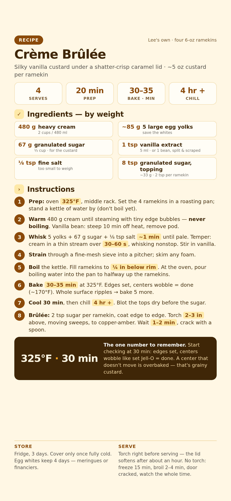

Silky vanilla custard under a shatter-crisp caramel lid. Four ramekins, about 5 oz of custard each. About 20 minutes of active work; the oven and fridge do the rest.

📱 For your phone — tap to open the full-size card, then save it to Photos.
For four 6-oz ramekins (~5 oz custard each). Grams lead; volume in the small line.
Weigh if you can. Set the bowl on the scale, tare between ingredients, go by grams.
Preheat the oven to 325°F, rack in the middle position. Set the 4 ramekins in a roasting pan, spaced so they don't touch. Fill a kettle with about 8 cups (2 L) of water and leave it on the stove — don't boil it yet.
Why the water: the custards bake sitting in hot water, which shields them from direct oven heat so they set silky instead of curdling. The water surrounds the ramekins; it never touches the custard.
Pour 480 g cream into a medium saucepan over medium heat. Ready in about 5 minutes, when steam rises and tiny bubbles ring the edge. Turn off the heat, leave the pan where it is.
Stop: don't let the cream reach a full boil — boiled cream scorching and forming a skin is how a grainy custard starts.
Vanilla bean? Add the scraped seeds and pod now, steep 10 minutes off heat, pull the pod before tempering.
Whisk 5 yolks (~85 g), 67 g sugar, and ⅛ tsp salt in a medium bowl for about 1 minute, until pale and slightly thick.
First time separating eggs? Crack one at a time over a small bowl, pass the yolk between shell halves, let the white drop. Cold eggs separate more cleanly. Save the whites — they keep 4 days.
Whisk the yolks nonstop with one hand. Pour the warm cream in a thin, slow stream with the other — take a full 30–60 seconds to add all of it. Stir in 1 tsp vanilla extract.
Stop: cream poured in fast cooks the yolks into sweet scrambled eggs. Thin stream, constant whisk.
Pour the custard through a fine-mesh sieve into a spouted pitcher. The sieve catches stray egg bits and pops bubbles. Skim any leftover surface foam with a spoon.
No sieve? Any fine strainer works. Skipping the strain entirely still tastes good, just less silky.
Boil the kettle. Pour the custard evenly into the 4 ramekins, stopping ¼ inch below each rim — about 5 oz each. Pull the middle rack halfway out, set the pan on it, then pour the boiling water into a corner of the pan until it reaches halfway up the ramekins. Slide the rack in, close the door.
Stop: never pour water over or into the ramekins — water in the custard ruins the texture. Filling at the oven also means you never carry a full pan of boiling water across the kitchen.
Bake 30–35 minutes at 325°F. At 30 minutes, nudge the pan with a mitted hand: done = edges hold still, only the centers wobble like set Jell-O (about 170°F internal, if you use a thermometer).
Stop: a center that doesn't move at all is overbaked — that's grainy custard. Start checking at 30 minutes, not 35.
Whole surface rippling? Bake 5 more minutes, test again.
Pull the whole pan out and set it on the stovetop. Lift each ramekin out of the water — tongs plus a thin spatula, or grip with a folded dish towel — onto a wire rack. Cool 30 minutes, then refrigerate uncovered for at least 4 hours.
Keeping them past a day? Cover with plastic wrap only once they're fully cold — covering warm custard traps drippy condensation. They hold 3 days in the fridge.
Blot the custard surface dry with the corner of a paper towel — sugar won't caramelize evenly on a wet surface. Sprinkle 2 tsp sugar over each custard, tilt to coat edge to edge, tap out the excess.
Torch: hold the flame tip 2–3 inches above the sugar and move in slow, steady sweeps. Sugar goes wet → bubbling → amber. Stop at copper-penny amber.
Stop: keep the flame moving the entire time. A flame parked in one spot turns that patch black and bitter before the rest even melts.
Wait 1–2 minutes. The caramel is ready when the back of a spoon taps against it like glass. Tap, listen, eat immediately. That sound is the whole point.
No torch? Freeze the custards 15 minutes first so the broiler doesn't warm them through, then broil on the top rack 2–4 minutes with the door cracked open. Watch the entire time — it turns fast.
3 days in the fridge, uncovered until fully cold, then covered. The caramel lid starts softening after about an hour — brûlée only right before serving, never in advance.
They keep 4 days in the fridge. Meringues, financiers, or tomorrow's egg-white omelet all count as responsible ownership.
Overbaked. Next time start checking at 30 minutes and pull them while the centers still wobble.
The hot cream went in too fast. Pour in a thin stream over a full 30–60 seconds, whisking nonstop.
Water got into a ramekin during the bath. Pour the water into the pan's corner, never over the ramekins.
The torch flame parked in one spot. Keep it sweeping, 2–3 inches above, and stop at copper-amber.
The caramel was torched too early. Torch right before serving only — the lid softens after about an hour.
Underbaked. Give it 5 more minutes, then run the jiggle test again.